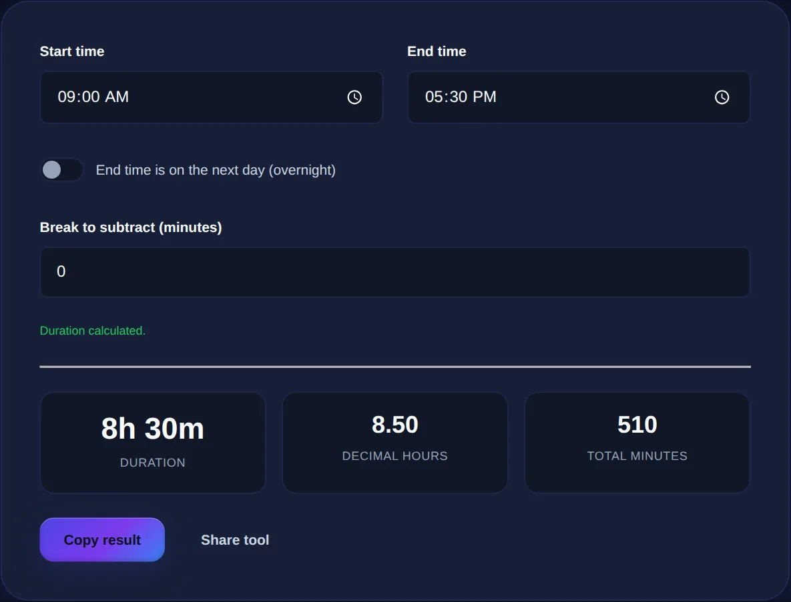

How to Calculate the Time Between Two Times (Including Overnight)
Why subtracting clock times trips people up, the reliable minutes-since-midnight method, how to handle overnight shifts, and how to convert to decimal hours for timesheets.
By Mubasher Hussain · Published 2026-09-10 · Updated 2026-09-01 · 967 words · about 4 minute read
Working out how long something lasted, a shift, a meeting, a journey, feels like it should be instant subtraction. Yet the answer comes out wrong surprisingly often, because clock time does not behave like ordinary numbers. This guide shows the reliable way to find the duration between two times, how to handle a shift that crosses midnight, and how to turn the result into the decimal hours a timesheet expects. You can check every calculation with the free Time Duration Calculator.
Why clock subtraction goes wrong
The trap is that clock time is base 60, not base 10. An hour has 60 minutes, not 100, so the digits after the colon do not behave like decimals. From 9:45 to 10:30 is not 0.85 of an hour, even though 10.30 minus 9.45 looks like it should be. Nor is it made of a clean 30 minus 45. The minutes have gone backwards, so you have to borrow a whole 60-minute hour, exactly as you borrow a ten in ordinary subtraction, and the real answer is 45 minutes.
Because borrowing across a base-60 boundary is easy to get wrong in your head, the dependable method avoids it entirely by converting to a single unit first.

The minutes-since-midnight method
Here is the method that always works. Convert each time to the number of minutes since midnight: multiply the hours by 60 and add the minutes. Subtract the start from the end. Then convert the result back into hours and minutes by dividing by 60 for the hours and taking the remainder for the minutes. There is no borrowing and no base-60 confusion, because during the subtraction everything is just a plain count of minutes.
Take 9:45 to 10:30. The start is 9 times 60 plus 45, which is 585 minutes. The end is 10 times 60 plus 30, which is 630 minutes. The difference is 630 minus 585, which is 45 minutes. Take a full shift, 09:00 to 17:30: the start is 540 minutes, the end is 1050, the difference is 510 minutes, and 510 divided by 60 is 8 with a remainder of 30, so 8 hours 30 minutes. That is exactly what the calculator does behind the scenes.
| Time | Minutes since midnight | Working |
|---|---|---|
| 09:00 start | 540 | 9 x 60 |
| 17:30 end | 1050 | 17 x 60 + 30 |
| Difference | 510 | 1050 - 540 |
| As h:m | 8h 30m | 510 / 60 rem 30 |
The overnight problem
Now the second trap: a shift that crosses midnight. Someone clocks in at 22:00 and out at 06:00. In minutes since midnight the start is 1320 and the end is 360, and 360 minus 1320 is minus 960, a nonsensical negative sixteen hours. The end time looks earlier than the start because it belongs to the next day. The fix is to recognise that and add a full day, 24 hours or 1440 minutes, to the end before subtracting: 360 plus 1440 is 1800, and 1800 minus 1320 is 480 minutes, which is the correct 8 hours. Ticking the overnight option does this addition for you so you never see the negative.
Enter a start and end time to get the exact duration in hours and minutes, decimal hours and total minutes; tick overnight for shifts that cross midnight and subtract an unpaid break.
Subtracting a break
For paid hours, the raw span is often not the answer, because an unpaid break sits inside it. The clean way to handle this is to work out the total duration first, then subtract the break as a flat number of minutes at the end, rather than trying to juggle it inside the clock arithmetic. An 09:00 to 17:30 span is 510 minutes; subtract a 30-minute lunch and you have 480 minutes, or 8 hours exactly. Keeping the break as a separate final subtraction keeps the calculation simple and easy to check.
Decimal hours for timesheets and billing
Payroll systems and invoices almost always want decimal hours, not hours and minutes, and this is where another common error appears. Eight hours and thirty minutes is 8.5 hours, not 8.30, because you convert the minutes to a fraction of an hour by dividing by 60. Thirty minutes is 30 divided by 60, which is 0.5; fifteen minutes is 0.25; twenty minutes is 0.333. Writing 8.30 on a timesheet quietly underpays by turning 30 minutes into a third of what it should be.
To convert minutes to a decimal, divide by 60: 15 is 0.25, 30 is 0.5, 45 is 0.75. The calculator shows hours-and-minutes, decimal hours and total minutes at once, so you never have to convert by hand for a timesheet.
Common questions
How do I calculate hours for an overnight shift? Enter both times and tick the overnight box; the tool treats the end as the next day, so 22:00 to 06:00 correctly returns 8 hours. How do I convert minutes to decimal hours? Divide the minutes by 60, so 45 minutes is 0.75 hours; the calculator does this automatically. What is the difference between this and a date difference? This measures within a day (or across one midnight); to count whole days between two calendar dates, use the date difference tool instead. Are my times uploaded? No, the calculation runs entirely in your browser.
Time subtraction stops being error-prone the moment you convert to minutes, subtract, and convert back, with a day added for anything overnight. Keep the Time Duration Calculator handy for timesheets and shifts, and when you need to count whole days rather than hours, reach for the Date Difference Calculator.